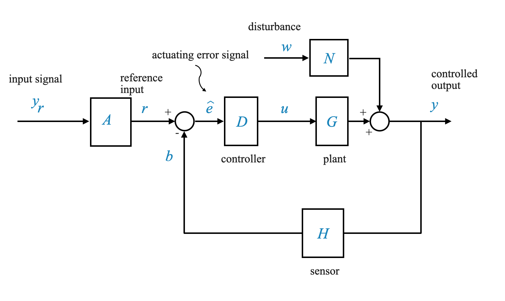
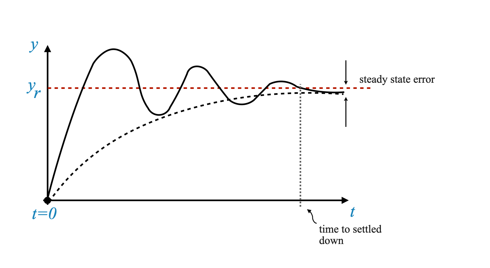
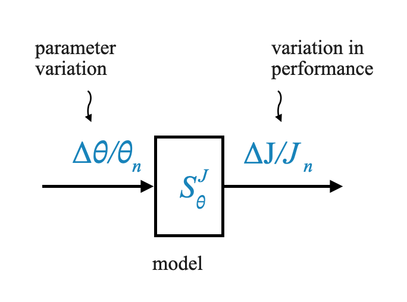
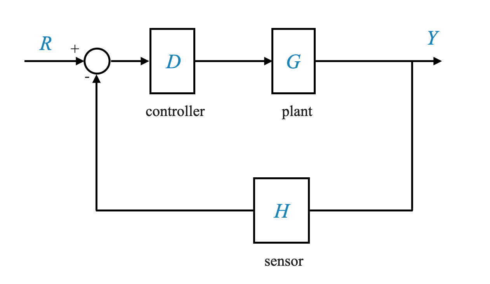

Per iniziare il nostro viaggio, rivisitiamo il diagramma di feedback di base di cui abbiamo discusso in precedenza. Ecco una visualizzazione:

\(G(s)\): Rappresenta l’impianto, che per semplicità indicheremo come SG.
\(D\): la funzione di trasferimento del nostro controller.
\(N\): Un modello che cattura i disturbi che agiscono sul sistema.
\(H\): La funzione di trasferimento del nostro sensore.
\(y\): la nostra variabile controllata.
\(y_r\): Il comando o il segnale di riferimento.
\(e = y_r - y\): Il segnale di errore
Il rilevatore di errori confronta il segnale di riferimento con il segnale di feedback per produrre il segnale di attuazione, \(\hat{e}\). Il nostro segnale controllato è indicato con \(u\).
In generale, questo diagramma incapsula le caratteristiche della maggior parte dei sistemi di controllo che incontrerai.
🤔 Domanda pop-up: cosa rappresentano i simboli G, D e H nel diagramma del sistema di controllo del feedback? - A. Variabile Controllata, Disturbo, Sensore - B. Impianto, Controller, Sensore - C. Segnale di attivazione, controller, errore
Risposta: B. Impianto, controller, sensore
Obiettivi del design
Il nostro obiettivo primario? Assicurati che la variabile controllata, \(y\), rispecchi fedelmente \(y_r\) per tutto il tempo \(t \ge t_0\) (dove \(t_0\) segna il punto in cui inizia il controllo):
\[
y(t) \approx y_r(t)\;\;\;t \ge t_0
\]
Tuttavia, sorgono delle sfide. Immergiamoci più a fondo.
Uno scenario industriale comune è quando \(y_r\) rimane costante per un periodo prolungato (set-point) e l’obiettivo è che \(y_r\) si allinei rapidamente con \(y_r\) e mantenga quel valore.
Questo scenario è definito controllo del setpoint o problema del regolatore.
Emergono due misure chiave di performance:
Tempo di assestamento: il tempo necessario a \(y\) per avvicinarsi a \(y_r\). Tempi di assestamento inferiori indicano una velocità di risposta superiore del sistema (risposta più rapida).
Precisione dello stato stazionario: una volta raggiunto l’equilibrio, \(y\) dovrebbe rimanere vicino a \(y_r\). La differenza, o errore di stato stazionario, idealmente dovrebbe essere zero.
Questi sono in sintesi i requisiti di controllo.
Tuttavia, il mondo reale è complesso e vari vincoli possono ostacolare i nostri obiettivi. Esploriamo questi:
1. Stabilità
Una considerazione fondamentale. Un sistema stabile non presenta grandi variazioni di risposta a cambiamenti minori nei segnali di comando, nei disturbi o nei parametri del sistema. Anche se in seguito approfondiremo la definizione quantitativa di stabilità, ricorda sempre che tutte le specifiche prestazionali devono essere soddisfatte sotto l’egida della stabilità.
2. Vincoli di ampiezza di ingresso
La validità del nostro modello lineare dipende dalla garanzia che le ampiezze del segnale rimangano entro determinati limiti. Il superamento di questi limiti può rendere nulle le nostre ipotesi sul modello lineare.
È essenziale capire che quando adottiamo un modello di funzione di trasferimento, presupponiamo che rappresenti accuratamente ogni componente del sistema. Ciò comprende l’impianto, il controller, il sensore e altro ancora. Ciò è convalidato dal tipo di diagramma a blocchi che utilizziamo per i nostri progetti.
Tuttavia, non tutto è semplice. Rifletti su questo: cosa succede se l’ampiezza dei vari segnali supera una certa soglia? Le ricadute sarebbero significative. Il presupposto della linearità, che è fondamentale per il nostro sistema, non reggerebbe più. Di conseguenza, il diagramma a blocchi fondamentale alla base del nostro progetto verrebbe reso impreciso. Questa deviazione potrebbe portare a risultati insoddisfacenti nelle applicazioni del mondo reale.
È chiaro che il nostro design dovrebbe rimanere entro certi limiti di ampiezza. In caso contrario, il modello lineare del nostro sistema potrebbe essere invalidato, compromettendo l’affidabilità dell’intero sistema.
Questo vale anche quando simuli il tuo sistema in laboratorio. È necessario tenere conto dei limiti dei segnali in modo da poter rimanere sotto le proprie ipotesi lineari.
🤔 Domanda pop-up: Cosa succede se l’ampiezza dei segnali supera un certo limite nel nostro sistema di controllo?
Risposta: il presupposto della linearità diventa non valido, rendendo impreciso il nostro diagramma a blocchi fondamentale. Ciò può comportare che il progetto non funzioni come previsto nelle situazioni del mondo reale.
3. Reiezione del disturbo:
Il nostro sistema dovrebbe mantenere la sua precisione e velocità di risposta, anche di fronte a disturbi. Pertanto, una buona progettazione dovrebbe filtrare efficacemente gli effetti dei disturbi.
Ogni sistema di controllo aspira a due obiettivi primari:
Velocità di risposta: si riferisce alla rapidità con cui un sistema reagisce a un segnale di ingresso.
Precisione dello stato stazionario: implica la precisione con cui il sistema può mantenere il suo stato in risposta a un segnale di comando.
Tuttavia, i disturbi pongono sfide. È fondamentale che il sistema riduca i disturbi in modo efficace per garantire che non mettano a repentaglio la velocità di risposta o la precisione dello stato stazionario. I disturbi sono particolarmente problematici perché in genere sono sconosciuti. Se potessimo prevederli, non rappresenterebbero una sfida così grande. Tuttavia, i disturbi del mondo reale sono spesso casuali e imprevedibili.
🤔 Domanda popup: Perché i disturbi rappresentano una sfida per un sistema di controllo?
Risposta: Solitamente sono sconosciuti, casuali e possono influire negativamente sulla velocità di risposta del sistema e sulla precisione in condizioni stazionarie.
Prossime discussioni
Oggi abbiamo toccato alcuni aspetti vitali della teoria del controllo del feedback. Man mano che proseguiamo, approfondiremo ciascun vincolo ed esploreremo le strategie per superarli. Inoltre, nelle nostre sessioni successive, esempi di applicazioni reali illustreranno ulteriormente questi concetti.
Per ora, mantieni questi concetti freschi nella tua mente e, come sempre, sentiti libero di rivisitare i capitoli precedenti per rafforzare la tua comprensione.
Filtro rumore
Uno svantaggio intrinseco del controllo del feedback è l’inevitabile uso di un sensore. In un mondo ideale, senza la necessità di feedback, non avremmo bisogno di sensori (non sarebbe richiesto alcun feedback). Ma i sensori, sebbene vitali, introducono rumore ad alta frequenza nel sistema. Se questo rumore prevale, il sistema potrebbe finire per rispondere più al rumore che al segnale reale, portando a risultati indesiderati. Per risolvere questo problema è necessario introdurre adeguati filtri ad alta frequenza all’interno del circuito di feedback.
Sensibilità e robustezza
I concetti di sensibilità e robustezza sono intrecciati. L’impianto di un sistema di controllo è modellato da una funzione, \(G(s)\).
Questo modello comprende vari componenti fisici. Durante i nostri sforzi di modellazione, è evidente che non è possibile catturare ogni sfumatura di un sistema fisico all’interno di un modello. Ciò si traduce in errori di modellazione.
Ad esempio, quando modelliamo la temperatura in un serbatoio, presupponiamo che la temperatura sia uniforme in tutto il serbatoio. Tuttavia, il sistema attuale è distribuito e diverse parti del serbatoio possono trovarsi a temperature diverse. Oppure in un sistema meccanico l’effetto molla (torsione) dell’albero di un motore è solitamente considerato pari a zero.
Ora, sebbene sia possibile creare modelli più complessi per catturare meglio le sfumature, ciò spesso porta ad algoritmi di progettazione altrettanto complessi. E qui sta l’enigma. A volte, i modelli più semplici con algoritmi di progettazione più semplici si rivelano più efficaci delle loro controparti complesse.
Uno dei motivi è che disponiamo di strumenti di progettazione molto potenti per modelli lineari semplici. L’utilizzo di modelli complessi potrebbe significare che non disponiamo di un algoritmo di progettazione appropriato su cui è necessario ricercare e lavorare. Potrebbe diventare così complesso che potrebbe anche non valerne la pena.
Quando parliamo del nostro modello di impianto \(G(s)\) dobbiamo sempre essere consapevoli che avremo: - Errori di modellazione. È necessario eseguire test appropriati sul progetto per verificare che le approssimazioni e le semplificazioni del modello siano valide. - il parametro cambia con il tempo.
La robustezza è la capacità del sistema di funzionare in modo soddisfacente nonostante i cambiamenti finiti nel suo modello, dovuti a errori o variazioni dei parametri.
Al contrario, la sensibilità si riferisce al modo in cui un sistema risponde a cambiamenti differenzialmente piccoli. Un sistema insensibile alle variazioni dei parametri è spesso considerato robusto.
🤔 Domanda popup: Cosa differenzia la robustezza dalla sensibilità in un sistema di controllo?
Risposta: La robustezza riguarda le prestazioni di un sistema nonostante i cambiamenti limitati del modello, mentre la sensibilità si riferisce alla sua reazione a cambiamenti molto piccoli.
Il termine “robustezza” è ancora oggetto di ricerca attiva. Anche se occasionalmente potremmo riferirci a un design come “robusto”, è essenziale ricordare che nel nostro contesto spesso denota una forma qualitativa di design basato sulla sensibilità.
Definire la risposta dinamica
Quando parliamo di sistemi di controllo, uno degli aspetti essenziali da comprendere è la modellazione della risposta dinamica (o il miglioramento della sua risposta transitoria). Questo aspetto gioca un ruolo cruciale nel raggiungimento delle prestazioni desiderate per il nostro sistema.
Sebbene in teoria potremmo desiderare reazioni istantanee, i componenti fisici introducono sempre un certo ritardo. Questo ritardo si manifesta come un “tempo di assestamento”, il tempo impiegato dal sistema per stabilizzare la propria produzione. Inoltre, c’è l’errore di stato stazionario, la deviazione tra i risultati desiderati e quelli effettivi una volta che il sistema si è stabilizzato.

Con riferimento all’immagine sopra: A t=0, immagina che al sistema venga dato un segnale di comando costante $ y_r $. Ora, idealmente, la variabile controllata $ y $ dovrebbe seguire il più fedelmente possibile $ y_r $, ottenendo una risposta quasi istantanea.
Ma ecco il problema! Ottenere una risposta istantanea non è pratico perché ogni componente del sistema ha un certo ritardo o ritardo. A causa di questi ritardi, il sistema impiega un tempo finito per raggiungere il valore desiderato $ y_r $.
Questi ritardi o ritardi nella risposta del sistema possono essere dovuti a vari fattori come la natura intrinseca dei componenti utilizzati, disturbi esterni e persino uno smorzamento intenzionale aggiunto per scopi di stabilità.
Tempo di assestamento e velocità di risposta
Se la risposta del nostro sistema dovesse assomigliare a questa,
Figura: la risposta della variabile controllata nel tempo, oscillando attorno al segnale desiderato $ y_r $ prima di stabilizzarsi definitivamente.
Il tempo necessario affinché la risposta del sistema si stabilizzi attorno all’output desiderato è chiamato “tempo di assestamento”. Un tempo di assestamento inferiore indica una risposta del sistema più rapida, spesso definita “velocità di risposta”.
Precisione allo stato stazionario
Una volta che il sistema si è stabilizzato, è fondamentale verificare la differenza tra la variabile controllata effettiva $ y $ e il segnale desiderato $ y_r $. Questa differenza è l’errore allo stato stazionario e minimizzare questo errore è una misura della precisione allo stato stazionario del sistema.
🤔 Domanda popup: Cos’è l’errore di stato stazionario? Risposta: L’errore a regime è la differenza tra la variabile controllata effettiva e il segnale desiderato una volta che il sistema si è stabilizzato.
Oscillare o non oscillare?
Una domanda chiave nei sistemi di controllo! Le oscillazioni possono essere utili in quanto possono aumentare la velocità di risposta. Tuttavia, ampie oscillazioni potrebbero portare alla saturazione del sistema o addirittura danneggiare i componenti.
Una risposta oscillatoria può essere il segno di un sistema poco smorzato, che può avere una buona velocità di risposta ma rischia di andare oltre. Un sistema sovrasmorzato, d’altra parte, potrebbe avere una risposta più lenta ma non supererà l’uscita desiderata.
🤔Domanda popup: Quali potrebbero essere i rischi di un sistema poco smorzato?
Risposta: un sistema sottosmorzato può avere una risposta più rapida ma rischia di superare l’uscita desiderata e potrebbe portare a grandi oscillazioni, che possono danneggiare i componenti del sistema o portare alla saturazione del sistema.
D’altro canto, un sistema fortemente smorzato o sovrasmorzato potrebbe sopprimere le oscillazioni e impiegare più tempo per raggiungere lo stato stazionario. Ciò si traduce in una velocità di risposta più lenta. Pertanto, nel design si cerca spesso un equilibrio o un compromesso.
Il cliente potrebbe semplicemente dirti: “questa è l’ampiezza massima della risposta e questa è la velocità di risposta, e sarà tua responsabilità come ingegnere di controllo modellare la risposta dinamica per soddisfare i vincoli sull’ampiezza di ingresso/uscita e velocità di risposta (e qualsiasi altra tu possa avere).”
Tempo di assestamento - illustrazione
Per chiarire, immagina due risposte:
Risposta smorzata: impiega più tempo a stabilizzarsi, ma senza oscillazioni.
Risposta poco smorzata: assesta più velocemente, ma con oscillazioni.
Il tempo impiegato da ciascun sistema per stabilizzarsi entro un certo intervallo accettabile (come 2% o 5%) attorno al valore di stato stazionario definisce il tempo di assestamento. Questa definizione aiuta i progettisti a determinare se il sistema soddisfa i requisiti dell’utente.
import numpy as npimport matplotlib.pyplot as plt# Time arrayt = np.linspace(0, 10, 1000)# Overdamped Response# Parameters for the overdamped systema1, a2 =.5, 1y_overdamped =1- np.exp(-a1 * t)# Underdamped Response# Parameters for the underdamped systemomega_d =1.5# damped frequencyzeta =0.2# damping ratio (zeta < 1 for underdamped)y_underdamped =1- np.exp(-zeta * omega_d * t) * np.cos(omega_d * t)omega_d =1.5# damped frequencyzeta =0.05# damping ratio (zeta < 1 for underdamped)y_underdamped_1 =1- np.exp(-zeta * omega_d * t) * np.cos(omega_d * t)# Create plotsplt.figure(figsize=(12, 6))# Overdamped plotplt.subplot(1, 2, 1)plt.plot(t, y_overdamped, label='Overdamped')plt.title('Overdamped Response')plt.xlabel('Time')plt.ylabel('Response')plt.grid(True)plt.legend()# Underdamped plotplt.subplot(1, 2, 2)plt.plot(t, y_underdamped, label=r'Underdamped $\zeta=0.2$', color='r')plt.plot(t, y_underdamped_1, label=r'Underdamped $\zeta=0.05$', color='g')plt.title('Underdamped Response with Oscillations')plt.xlabel('Time')plt.ylabel('Response')plt.grid(True)plt.legend()# Display the plotsplt.tight_layout()plt.show()
Precisione allo stato stazionario
Requisito finale che consideriamo.
L’accuratezza allo stato stazionario si riferisce alla capacità di un sistema (spesso un sistema di controllo) di raggiungere con precisione il valore di uscita desiderato (o set-point) allo stato stazionario, cioè dopo che eventuali effetti transitori sono diminuiti e il sistema si è stabilizzato. È una misura di quanto l’output in stato stazionario di un sistema è vicino al suo valore desiderato.
Nei sistemi di controllo, gli errori in stato stazionario sono specifiche comuni per valutare la capacità di un sistema di tracciare un ingresso di riferimento, come ingressi a gradino, rampa o parabolici. L’errore allo stato stazionario è la differenza tra l’output effettivo e l’output desiderato quando il tempo si avvicina all’infinito (dopo che tutti i comportamenti transitori sono scomparsi).
Conflitto nei requisiti di progettazione
Raggiungere una progettazione ottimale è complesso a causa dei conflitti tra vari requisiti. Ad esempio:
Il miglioramento della precisione in stato stazionario (che in genere comporta l’introduzione di azioni di controllo integrale) potrebbe comportare oscillazioni più ampie o addirittura instabilità.
Il filtraggio dei disturbi potrebbe aumentare gli effetti del rumore sul sistema.
Diventa evidente che questi requisiti non sono sempre armoniosi. Raggiungere uno potrebbe comprometterne un altro. Ecco perché il ruolo del progettista di sistema è così cruciale; devono trovare il giusto equilibrio tra questi requisiti contrastanti.
🤔 Domanda popup: Perché non riusciamo sempre a soddisfare i requisiti migliori nella progettazione dei sistemi di controllo?
Risposta: molti requisiti di progettazione sono in conflitto. Ad esempio, il miglioramento della precisione in stato stazionario potrebbe portare a oscillazioni o instabilità maggiori. Pertanto, è necessario un equilibrio e raggiungere il migliore dei mondi potrebbe non essere possibile.
Feedback e sistemi a circuito aperto nell’analisi di sensibilità
I sistemi di feedback e ad anello aperto sono concetti fondamentali nell’ingegneria di controllo. In questa parte del quaderno approfondiremo l’analisi di sensitività di questi sistemi. L’analisi della sensibilità ci aiuta a capire come piccoli cambiamenti nei parametri del sistema possono influire sulle prestazioni complessive.
Riepilogo rapido:
Sistema di feedback (sistema a circuito chiuso): un sistema in cui una parte dell’output viene restituita all’input per regolarne il comportamento.
Sistema a circuito aperto: un sistema che funziona senza considerare alcun feedback dal suo output.
Ora, sveliamo i problemi di sensibilità legati a questi sistemi.
Analisi di sensibilità
La sensibilità, nel contesto dei sistemi, si riferisce alla misura di come un cambiamento in un parametro di sistema influisce sulle prestazioni del sistema.
Matematicamente, consideriamo $ J $ una misura di prestazione come la velocità di risposta, che è funzione di un parametro $ $ dell’impianto.
Supponendo che $ $ abbia un valore nominale $ _n $ con una deviazione $ $, la sensibilità riguarda l’impatto delle piccole variazioni di $ $ su $ J $.
Il valore nominale della tua prestazione (ad esempio, velocità di risposta) è:
\[
J_n = J( \theta_n )
\]
Poiché la sensibilità riguarda variazioni differenzialmente piccole, possiamo utilizzare l’espansione in serie di Taylor per \(J\) attorno al suo punto nominale.
Utilizzando lo sviluppo in serie di Taylor, l’effetto delle variazioni di $ $ su $ J $ può essere rappresentato come:
Per la nostra analisi, trascuriamo i termini di ordine superiore, considerando solo la variazione del primo ordine, e quindi la nostra equazione diventa:
Questa formula rappresenta un modello di sensibilità input-output.
Qui $ / _n $ può essere considerato come input e $ J / J_n $ come output.
Questa funzione di sensibilità $ S^J_{} $ aiuta a determinare come il sistema risponde a varie variazioni di $ / _n $.

Una volta disponibile il modello $ S^J_{} $, diventa un esercizio di simulazione per comprendere l’impatto delle variazioni dei parametri sulle prestazioni. Esattamente come lo facciamo per la pianta.
Si noti che daremo variazioni finite ai parametri anche se il nostro modello è sviluppato per cambiamenti differenzialmente piccoli. Questo modello fortunatamente funziona anche per variazioni finite piccole.
Per un sistema specifico dovrai valutare \(\frac{d J}{d \theta} \Big|_{\theta = \theta_n}\), \(\theta_n\) e \(J_n\) sono i valori nominali.
Effetto del feedback sulla sensibilità
Data la nostra comprensione della sensibilità, esaminiamo l’effetto del feedback sulla sensibilità. Per questo, considera il ciclo di feedback di base (assumi che non ci siano disturbi):

La funzione di trasferimento di questo sistema è:
\[
M = \frac{Y}{R} = \frac{D \cdot G}{1 + D \cdot G \cdot H}
\]
Analisi:
I parametri del controller $ D $ sono sotto il nostro controllo (è un sistema aperto quello che progettiamo), mentre $ G $ e $ H $ (hardware del sistema) potrebbero cambiare.
Per capire come le variazioni di $ G $ (o $ H $) influenzano l’output $ Y $, possiamo derivare due funzioni di sensibilità:
\[ S^M_{G} \] e \[ S^M_{H} \]
Sia \(G\) che \(H\) dipendono dalle variazioni dei parametri: - \(G\) è una funzione di \(\theta\), \(G(\theta)\) e - \(H\) è una funzione di \(\alpha\), \(H(\alpha)\).
Vorremmo studiare: - l’effetto delle variazioni di \(\theta\) su \(Y\) (usando \(S^M_{G}\)): equivalente a studiare gli effetti delle variazioni di \(G\) su \(M\) - l’effetto delle variazioni di \(\alpha\) su \(Y\) (usando \(S^M_{H}\)): equivalente a studiare gli effetti delle variazioni di \(H\) su \(M\)
A questo punto, esplicitando la presenza del parametro \(\theta\) possiamo scrivere:
Da questa espressione possiamo trovare \(S^M_{G}\).
Per prima cosa possiamo convertire le modifiche differenziali in modifiche finite e calcolare \(\frac{\Delta M}{M}\) - dividendo l’espressione precedente (1) per \(M\):
Che si ottiene semplicemente dividendo \(\frac{\Delta M}{M}\) per \(\frac{dG}{G}\).
Commenti
Dall’espressione precedente l’interpretazione è chiara: controllando opportunamente il guadagno del controller $ D \(, possiamo regolare il guadagno dell'anello (\)D(s) G(_n,s) H(s) $) e quindi ridurre la sensibilità al livello desiderato. In sostanza, un guadagno del circuito più elevato si traduce in una sensibilità inferiore.
$ D(s) $ rappresenta il controller. La particolarità di $ D(s) $ è che è sotto il nostro controllo; possiamo modificarlo secondo le nostre esigenze.
Controllando abilmente il guadagno di $ D $, possiamo manipolare questo guadagno del circuito per regolare la sensibilità del sistema come desiderato. Il principio di base è semplice: maggiore è il guadagno del circuito, minore è la sensibilità del sistema.
🤔 Domanda popup: Qual è la sensibilità di un sistema a circuito aperto? Risposta: In un sistema a ciclo aperto, poiché non c’è feedback, $ H = 0 $. Pertanto, la sensibilità del sistema rispetto a $ G $ sarebbe 1, indicando che qualsiasi variazione di $ G $ si tradurrebbe in una variazione proporzionale nella produzione.
Sensibilità dei sistemi ad anello aperto e ad anello chiuso Sorge una domanda chiave: qual è la sensibilità di un sistema a circuito aperto? Per capirlo, valutiamo il diagramma di feedback.
Nello scenario in cui $ H $ è impostato a zero (cioè $ H = 0 $), eliminando di fatto il ciclo di feedback, la sensibilità del sistema rispetto a $ G $ diventa 1:
\[
S^M_{G} = 1\;\;\; \text{per il sistema a ciclo aperto}
\]
Questa conclusione può essere derivata dalla nostra espressione iniziale. Quando si elimina $ H $, l’espressione indica chiaramente che la sensibilità è pari a 1.
Ciò indica una comprensione fondamentale: un sistema a ciclo aperto è altamente sensibile alle variazioni di $ G $ con una sensibilità pari a 1.
Tuttavia, qui emerge la bellezza del controllo del feedback. Progettando giudiziosamente il controllo del feedback, in particolare il controller $ D(s) $, possiamo gestire e ridurre questa sensibilità secondo le nostre esigenze.
Sensibilità rispetto al Sensore
Approfondiamo un’altra dimensione della sensibilità: la sensibilità di $ M $ rispetto a $ H $, il sensore.
La sensibilità di $ M $ rispetto a $ H $ può essere espressa come (la sua derivazione è lasciata al lettore):
Aumentando il guadagno dell’anello diminuisce la sensibilità del sistema alle variazioni dei parametri dell’impianto. Ciò significa però anche che il sistema diventa molto sensibile alle variazioni dei parametri del sensore.
Quando il guadagno del loop aumenta \(S^M_{H}\rightarrow 1\).
🤔 Domanda popup: Come cambia la sensibilità del sistema con variazioni di $ H $ (quando aumentiamo il guadagno del loop)?
Risposta: Il sistema diventa più sensibile al sensore man mano che aumenta il guadagno del circuito. L’entità della sensibilità si avvicina a 1.
Ciò significa che introducendo un sensore nel sistema, abbiamo inavvertitamente introdotto anche un potenziale punto di elevata sensibilità. Ciò sottolinea l’importanza del design del sensore. La progettazione dell’hardware deve tenere conto dei problemi di sensibilità, garantendo che il sensore sia appropriato per l’impianto specifico in esame.
Sull’importanza della progettazione dei sensori L’introduzione del meccanismo di feedback, pur essendo cruciale per il controllo, porta con sé la sfida della sensibilità dovuta alle variazioni dei parametri del sensore. Ciò sottolinea la necessità di una progettazione meticolosa del sensore.
Tieni presente che ciò è dovuto al fatto che abbiamo un sensore per chiudere il circuito. L’introduzione del feedback ha portato un potenziale nuovo problema. Ciò significa che quando selezioniamo un sensore dobbiamo assicurarci che i parametri del sensore non cambieranno.
Sebbene modificare un impianto, spesso un vasto ambiente industriale, sia un compito arduo, se non impossibile, modificare un sensore è più fattibile. Pertanto, la progettazione del sensore deve essere tale che i suoi parametri rimangano coerenti e affidabili. In caso contrario, il sensore potrebbe introdurre sfide impreviste nel circuito, minando potenzialmente l’intero sistema di controllo.
Vale la pena notare che nelle applicazioni industriali il costo per la modifica di un intero impianto può essere esorbitante, ma i sensori sono componenti relativamente più economici e più flessibili. Pertanto, investire tempo e risorse nel perfezionamento della progettazione del sensore ripaga nel lungo termine.
🤔 Domanda popup: Perché la progettazione del sensore è così cruciale nei sistemi di controllo?
Risposta: Perché l’introduzione del feedback rende il sistema altamente sensibile al sensore e garantire che i parametri del sensore non cambino è spesso più fattibile che modificare un intero impianto.
Barra laterale - derivata di \(M\) rispetto a \(\theta\)
Data la funzione $ M(, s) $ come:
$ M(, s) = $
Vuoi la derivata parziale rispetto a $ $.
Differenziare un quoziente: se hai una funzione $ f(x) = $, la sua derivata è data da
$ f’(x) = $
Dove $ u’ $ e $ v’ $ sono rispettivamente le derivate di $ u $ e $ v $.